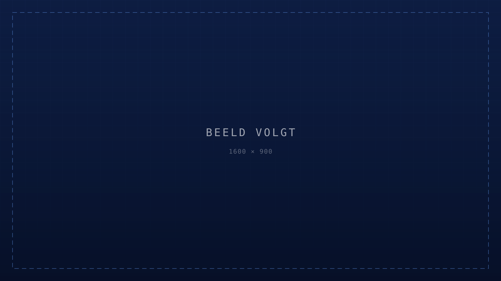

001
Selectie & advies
We analyseren je processen en doelen en selecteren de software die daarop aansluit. Beoordeeld op architectuur en integratie, niet op functielijst.
TECHLINK
Onafhankelijk advies over welke software je kiest, wat je schrapt en hoe je het invoert. Zonder leveranciersbelang, met verantwoordelijkheid tot en met adoptie.
Plan een gratis softwarescanSoftware Advisory
De meeste bedrijven hebben geen tekort aan software. Ze hebben te veel tools die elkaar overlappen, die niet met elkaar praten en die samen meer kosten dan iemand nog overziet. Wij brengen de stack terug tot wat werkt, en voeren die wijziging ook door.
01 Het probleem
Softwareleveranciers verkopen functies. Die demo ziet er altijd goed uit, want hij is gebouwd om er goed uit te zien. Wat je pas een jaar later merkt, is hoe het systeem van binnen in elkaar zit: of je data er weer uit komt, of er een bruikbare API is, en wat er gebeurt als je een tweede systeem ernaast zet.
Wij beoordelen daarop. Niet op de brochure, maar op architectuur, datastromen, integratiemogelijkheden en de vraag of het meegaat als je organisatie verandert. Wij verkopen geen licenties en hebben geen partnerovereenkomsten, dus ons advies kost je aan de achterkant niets extra's.
02 Voor en na
Status — nu
Status — na TECHLink

03 Capaciteiten
001
We analyseren je processen en doelen en selecteren de software die daarop aansluit. Beoordeeld op architectuur en integratie, niet op functielijst.
002
We brengen in kaart wat overlapt en wat weg kan. Vereenvoudigen levert vaker geld en overzicht op dan uitbreiden.
003
We richten in op jouw manier van werken, inclusief migratie van bestaande data. Live gaan is niet hetzelfde als bruikbaar zijn.
004
Software invoeren zonder het proces aan te raken, verplaatst het probleem. We herzien de werkwijze mee waar dat nodig is.
005
Ligt er al een voorstel of offerte van een leverancier? Wij beoordelen die op de punten die pas na ondertekening blijken.
04 Ons proces
Fase 01
Processen, systemen, datastromen en kosten op een rij. Inclusief de licenties die nog doorlopen voor tools die niemand meer opent.
Fase 02
We vertalen je situatie naar mogelijke oplossingsrichtingen, met een inschatting van kosten, doorlooptijd en opbrengst. Inclusief de optie om niets te vervangen.
Fase 03
Wij voeren de demo's en de leveranciersgesprekken. Je ziet alleen de opties die de eerste toets hebben doorstaan.
Fase 04
We vergelijken op totale kosten, integratie en houdbaarheid, en helpen kiezen. We bewaken dat je niet meer koopt dan je nodig hebt.
Fase 05
Inrichting, datamigratie, uitrolplan en begeleiding op de werkvloer. Een systeem dat niemand gebruikt, is geen besparing.
05 Wat we vaak horen
Meestal drie dingen: lagere vaste licentiekosten, minder handmatig overtypen tussen systemen, en kortere doorlooptijden omdat informatie op één plek staat. In de scan maken we die drie zo goed mogelijk in euro's zichtbaar.
Met een vast beoordelingskader: functionele fit met je processen, technische architectuur, integratiemogelijkheden, totale kosten over drie jaar en leveranciersrisico. Niet op basis van wat er populair is.
Nee. We hebben geen partnerovereenkomsten en ontvangen geen commissie van leveranciers. Onze omzet komt uit ons advies en onze implementatie, waardoor er geen reden is om je een duurder pakket aan te bevelen.
Zelden. Meestal ligt de winst in schrappen en koppelen, niet in vervangen. Een migratie is duur en risicovol; we stellen die alleen voor als het alternatief aantoonbaar slechter is.
Door gebruikers vroeg te betrekken, workflows te bouwen die logisch aanvoelen en de uitrol actief te begeleiden. Adoptie is geen fase aan het eind — het is de reden dat de rest werkt.
Een scan met advies is drie tot vier weken. Een selectietraject inclusief demo's en keuze duurt zes tot tien weken. De implementatie hangt af van het pakket en van de datamigratie.
→ Volgende stap
Je krijgt een overzicht van wat je nu betaalt, wat overlapt, wat ontbreekt en wat het oplevert als je het opruimt. Zonder verplichting om daarna met ons verder te gaan.
Plan een gratis softwarescan →